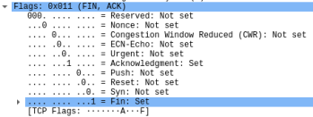
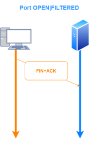
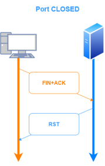

-sM: TCP Maimom Scan [BSD Systems]
The Maimon Scan (-sM), named as its creator, Uriel Maimon, sets the FIN and ACK bits.
This technique exploit the behavior
in the same way as NULL, FIN, and Xmas scan, except that the probe is FIN/ACK
This type of scan is useful because as Uriel Maimon found many
BSD-derived systems simply drop the packet if the port is open
In this Scan the RST packet is sent because the ACK packet sent is not associated with an existing valid connection,